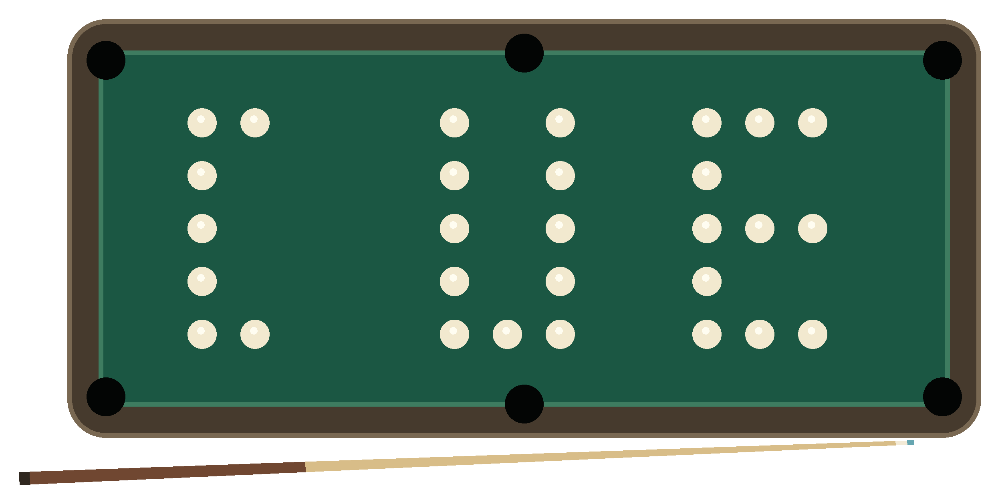
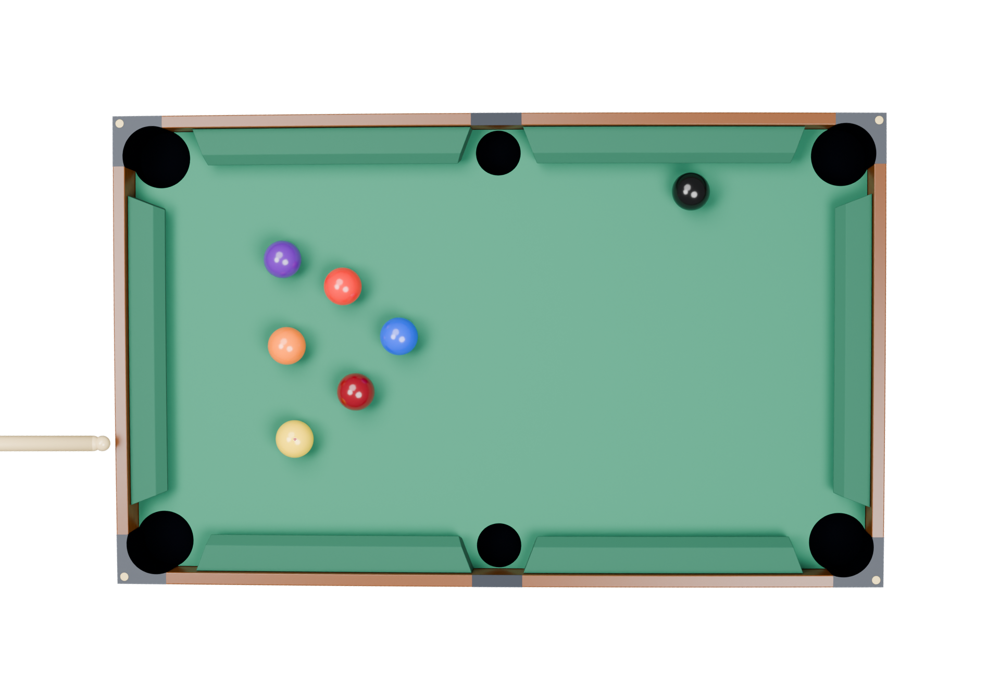
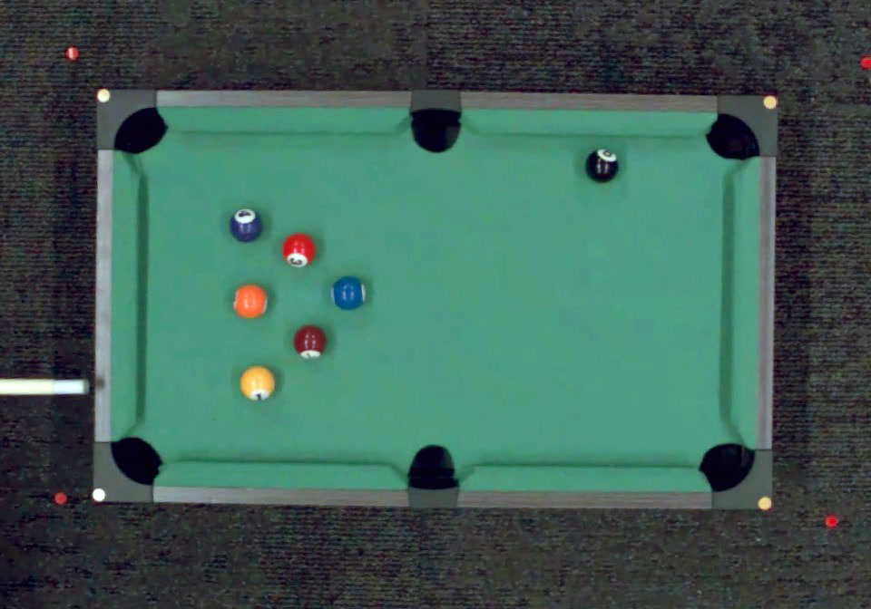

Calibration Using ExplorationClosing the Dynamics Gap through Self-Directed Robotic Interaction
Visual reconstruction alone does not reliably identify the dynamics. CUE learns about a scene by interacting with it, comparing the outcomes, and revising its simulation.
¹ Stanford University · ² ETH Zurich · ³ NVIDIA Research · ⁴ Microagi
* Project Co-Lead † Equal Contribution
01 Real2Sim2Real is not solved
A robot sees a pool table, reconstructs it in simulation, and plans a shot. The simulated ball reaches its target. On the real table, it stops somewhere else.
Real2Sim2Real offers an appealing way to build robot skills: reconstruct a digital twin of the scene, practice in simulation, and execute the resulting behavior on the physical robot. But transferring those skills depends on whether the simulation predicts what happens after contact.
Billiards makes this problem easy to see. Table reconstruction is simple, while contact-driven transitions are difficult to model in advance. How far a ball rolls, how it rebounds from a cushion, and what happens when two balls collide depend on physical properties that appearance alone does not reveal.
We call this the dynamics gap.


Approaches that learn dynamics from recorded interactions are limited by the data already collected. The reconstruction agent cannot choose another experiment when those observations leave something unresolved. System identification methods, including active exploration, let an agent learn from interaction, often within a simulator and parameter space specified by a human.
With CUE—Calibration Using Exploration, we let the agent develop the reconstruction and experimental process together.
02 Active scene reconstruction through agentic self play
CUE starts with a general instruction:
“Reconstruct the scene in simulation, then interact with the real table until confident that the simulation explains it. There would be no human reset during your exploration, so make sure to plan ahead.”
Every shot changes the table. A useful experiment must reveal something about the dynamics while leaving opportunities for further exploration.
Build the scene, then decide what to measure.
From initial images, the agent builds a MuJoCo model of the table, cushions, pockets, cue, and balls. It decides which dynamics parameters are likely to matter and sets initial ranges for them: plausible, but not yet grounded in this table.
To compare simulation with reality, the agent first built a camera-based ball tracker that turns each real shot into a trajectory comparable to a simulated rollout. It then fit physical parameters by minimizing sim-to-real trajectory difference with CMA-ES over parallel MuJoCo instances replaying recorded shots from their observed initial states.
Instead of continuing its generic opening shots, it proposed new shots targeting the parts of the scene its fitted model explained worst. It could revise the search strategy, refit the model, and test again.
03 A more predictive simulation
We evaluate CUE in a controlled setting where the true physics is hidden from the agent. A MuJoCo pool simulator serves as the “real world” across 25 conditions: five layouts × five physics settings. Each method receives at most 30 shots to build its model.
Held-out ball-position error
We also deploy CUE with Opus 5.5 on a small real pool table with unknown physical parameters. The project page lets you compare recorded real and simulated shots, inspect individual trajectory and endpoint errors, and view the CORL demonstrations.
04 How to actually solve Real2Sim2Real
The physical experiments exposed problems that parameter fitting alone could not resolve.
Agentic reconstruction needs richer dynamics models
Agents inferred that the table was not flat and added cloth curvature to the simulator. That improved the fit, but small ball imperfections and local surface variations remain difficult to reconstruct from camera views.
Parameter tuning cannot capture effects outside the model. Explicitly modeling every imperfection means continually extending the simulator. A concrete direction is a combination of physics-based simulation and data-driven dynamics models: keep geometry and contact mechanics in the simulator, and learn corrections to its predicted motion from real trajectories.
Agentic robotics needs stronger vision tools
Even offline tracking of balls on a clean green background, with clear boundaries, proved brittle: tracks jumped from stationary balls onto the moving cue. Agents kept patching the pipeline and needed prompting to reconsider the approach.
Agentic robotics creates a concrete opportunity for the vision community: robust, reusable tools that agents can reliably assemble, verify, and use in the physical world.
Agentic robotics needs better experimental judgment
Our coding agent needed guidance on how to spend time and compute across long physical experiments. In the initial run, its shot choices left the remaining balls against cushions and in corners, making them inaccessible and forcing it to stop exploration after only 17 shots.
We need systems that preserve future exploration options and help agents decide when to think, act, refit, or backtrack in the physical world.
05 Questions & resources
Does the 72% improvement come from the real robot?
No. It is the reduction in mean held-out ball-position error across 25 hidden-physics conditions in the simulation benchmark, after 30 interactions. The real-table deployment is a separate demonstration, with recorded shot comparisons on the project website.
What does “no resets” mean here?
The agent must plan exploration from the state left by its previous shot, without a human resetting the table during that exploration. This does not mean the entire development process was free of guidance: real deployment exposed perception and experimental-judgment failures, and safety interventions remained possible.
Where can I see the demonstrations?
The CUE project website includes CORL demonstrations, calibration stages, and ten recorded evaluation shots. Watch the 90-second overview here or the full project video.
CUE aims to unify action and world understanding through iterative interactions in simulation and the real world. The next question is how to help the agent judge what it has learned—and what it should try next.